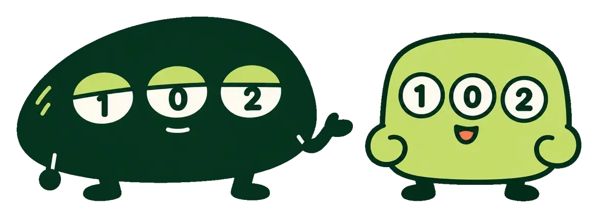
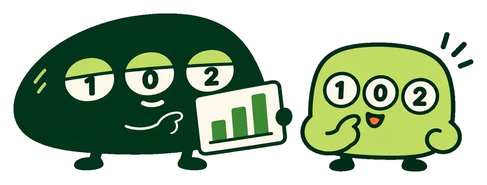

使い方は3ステップ

目を選ぶ
各試合で 1（ホーム勝ち）・0（引分）・2（アウェイ勝ち）をタップ。迷う試合は2つ・3つ選んでOK
フィルタで絞る
起こりにくい組合せを外して、買う通り数を減らします
買目計算
残った組合せを、重複なしのマルチ券に自動でまとめます
なぜフィルタを使うのか
ダブル8試合だと256通り（25,600円）。しかも「引分0試合」のような、過去データでは少ない組合せまで買うことに。起きやすい範囲だけに絞れば、同じ予算で当たる見込みを高められます

3つのフィルタ
本命寄り
波乱0〜2 · 引分2〜4堅さ38%以上
バランス
波乱1〜3 · 引分2〜4堅さ32〜38%
波乱狙い
波乱2〜5 · 引分1〜4堅さ35%以下
カバー率＝過去134回のうち、実際の結果がそのフィルタの範囲内だった回の割合 · 絞るほど安くなる一方、範囲外の結果になると当たりません
用語
- 波乱
- 投票率55%以上の人気側が負けること（引分は数えない）
- 堅さ
- 選んだ目のモデル確率の平均。高いほど本命寄り
- 穴目指数
- モデル確率と投票率の比較。50＝人気どおりで、モデル確率が投票率の2倍なら75、半分なら25（0〜100）。70以上で◆（人気のわりに起きやすい）
- ねらい目
- 穴目指数が70以上の目（◆）。毎回同じ計算で自動的に決まり、手で選んではいません。該当がない回は「なし」
- マルチ
- 1試合に複数の目を選んで、まとめて購入する買い方
よくある質問
totoCastはAI予想ですか？
過去5年のJリーグの試合結果と投票率から学習する機械学習モデル（いわゆるAI予想の一種）で、試合ごとの勝敗確率を計算しています。文章や画像を作る生成AIではなく統計的なモデルなので、当サイトでは「独自モデル」と呼んでいます。J1・J2・J3はそれぞれ別のモデルで予想しています。
「おすすめに含まれた結果 9.5/13」とは何の数字ですか？
過去の46回（2025/02〜2026/09）で、モデルのおすすめの目（1試合に2〜3個選ぶ試合を含む）に実際の結果が入っていた試合数の平均です（割合にすると73%）。1等が当たる確率ではありません。フィルタで絞った組合せで3等以上になったのは46回中3回（6.5%）です。この数字は当時の予想を再現した検証の値で、実際に公開した予想の成績は統計ページで別に記録しています。
予想はいつ更新されますか？
新しい回の販売が始まると速報版を公開し、最初の試合の前日10時に最新の投票率で確定版に更新します。投票率や出場停止などの情報は毎日10時に更新しています。
予想は当たりますか？
的中は保証できません。当たった回も外れた回も、すべての成績をアーカイブと統計ページで公開しています。予想は参考情報としてご利用ください。
穴目指数・ねらい目とは？
穴目指数は、モデルの確率と投票率を比べた指数です（50＝人気どおり、70以上で◆）。◆がついた目を「ねらい目」として表示しています。
料金や登録は必要ですか？
無料で、会員登録も不要です。なお、totoの購入は19歳未満の方はできません。